Détection automatisée de défauts et de particules sur des images#
Cet exemple montre comment détecter automatiquement des éléments de type tache – défauts, particules, points – sur une image avec DataLab, et couvre également d’autres fonctionnalités telles que le système de plugins :
Ajouter un nouveau plugin à DataLab
Débruitage d’une image
Détecter des taches sur une image
Enregistrer l’espace de travail dans un fichier
Tout d’abord, nous ouvrons DataLab, et ouvrons la boîte de dialogue des paramètres (en utilisant « Fichier > Paramètres… », ou l’icône  dans la barre d’outils).
dans la barre d’outils).
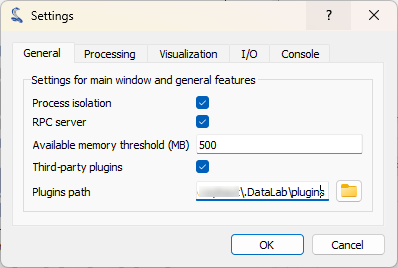
Dans l’onglet « Général », nous pouvons voir le champ « Chemin des plugins ». C’est le chemin où DataLab recherchera les plugins. Nous pouvons ajouter un nouveau plugin en copiant/collant le fichier du plugin dans ce répertoire.#
Voir aussi
Le système de plugins est décrit dans la section Plugins.
Ajoutons le plugin datalab_example_imageproc.py à DataLab (c’est un plugin d’exemple qui est fourni avec le package source de DataLab, ou peut être téléchargé ici).
Si nous fermons et rouvrons DataLab, nous pouvons voir que le plugin est maintenant disponible dans le menu « Plugins » : il y a une nouvelle entrée « Extract blobs (example) ».
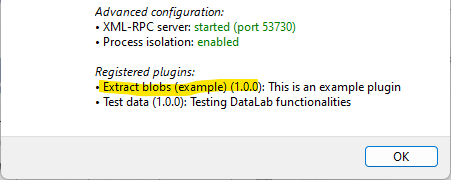
La boîte de dialogue « À propos de DataLab » affiche la liste des plugins disponibles.#
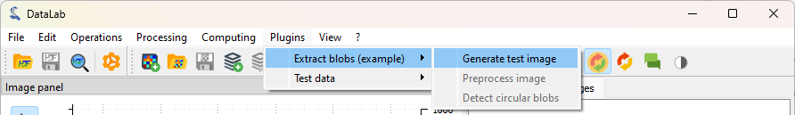
Cliquons sur « Extract blobs (example) > Generate test image »#
Note
Les menus de DataLab changent entre les images et les signaux. Pour pouvoir voir le menu « Extract blobs (example) », assurez-vous que le panneau « Images » est sélectionné (cliquez sur l’onglet « Images » à gauche).
Une boîte de dialogue contextuelle apparaît, demandant les paramètres de l’image de test à générer (la taille de l’image et son titre). Nous pouvons simplement conserver les paramètres par défaut et cliquer sur « OK ».
Pour information, l’image est générée par le plugin en utilisant le code suivant:
def generate_test_image(self) -> None:
"""Generate test image"""
newparam = self.edit_new_image_parameters(
title="Test image", hide_dtype=True, shape=(2048, 2048)
)
if newparam is not None:
# Create a NumPy array:
shape = (newparam.height, newparam.width)
arr = np.random.normal(10000, 1000, shape)
for _ in range(10):
row = np.random.randint(0, shape[0])
col = np.random.randint(0, shape[1])
rr, cc = skimage.draw.disk((row, col), min(shape) // 50, shape=shape)
arr[rr, cc] -= np.random.randint(5000, 6000)
center = (shape[0] // 2,) * 2
rr, cc = skimage.draw.disk(center, min(shape) // 10, shape=shape)
arr[rr, cc] -= np.random.randint(5000, 8000)
data = np.clip(arr, 0, 65535).astype(np.uint16)
# Create a new image object and add it to the image panel
obj = sigima.objects.create_image(
newparam.title, data, units=("mm", "mm", "lsb")
)
self.proxy.add_object(obj)
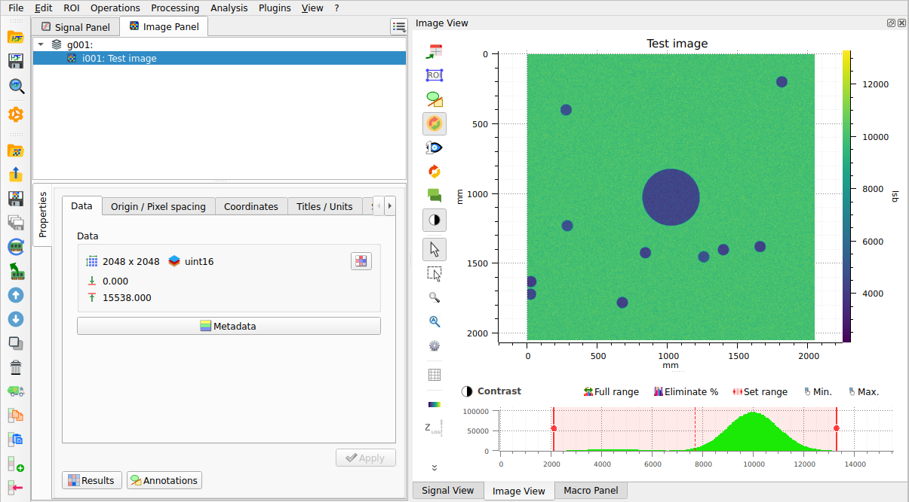
Le plugin a généré une image de test, et l’a ajoutée au panneau « Images ». L’image montre quelques taches, avec un disque central plus grand, et un fond bruité.#
Le plugin a d’autres fonctionnalités, telles que le débruitage de l’image, et la détection de taches sur l’image, mais nous ne les aborderons pas ici : nous utiliserons plutôt les fonctionnalités natives de DataLab pour réaliser, manuellement, les mêmes opérations que le plugin.
L’image est un peu bruitée, et aussi assez grande. De plus, les taches sont grandes par rapport à la taille des pixels.
Pour réduire le bruit, il existe plusieurs fonctions disponibles dans DataLab. En raison des considérations que nous venons de faire, nous pouvons considérer qu’un binning réduirait le bruit sans perdre l’information que nous recherchons. Appliquons un binning à l’image par un facteur de 2 sur les deux axes. Cela réduira la taille de l’image d’un facteur de 4, et l’écart type du bruit d’un facteur de 2. Choisir de modifier la taille des pixels en conséquence maintiendra la taille des taches constante dans l’unité précédente (dans ce cas, les pixels, mais dans une application réelle, nous pouvons les calibrer pour respecter une taille physique réelle).
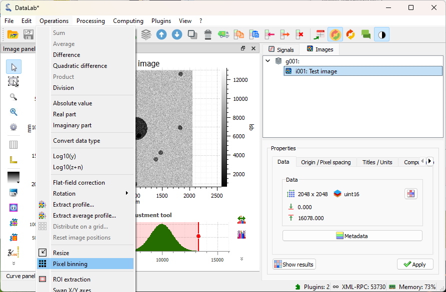
Cliquons sur « Opérations > Pixel binning ».#
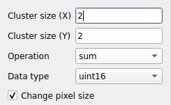
La boîte de dialogue « Binning » s’ouvre, avec plusieurs options. Réglez le facteur de binning à 2 pour les deux axes, sélectionnez la case « changer la taille des pixels » et cliquez sur « OK ».#
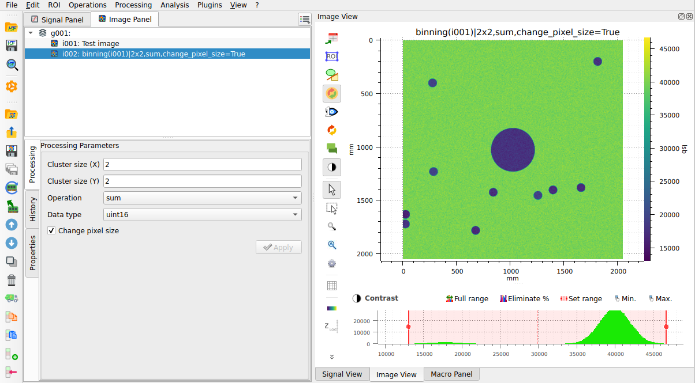
L’image binnée est ajoutée au panneau « Images ». Il est maintenant plus facile de voir les taches (même si elles étaient déjà assez visibles sur l’image d’origine : c’est juste un exemple), et l’image sera plus rapide à traiter.#
Une autre approche que nous pouvons adopter est d’appliquer un filtre médian mobile, pour réduire l’importance des pics. Nous le faisons avec une fenêtre de 5 ; bien sûr, en pratique, différentes tailles de fenêtre peuvent être testées pour trouver un bon compromis entre la réduction du bruit et la résolution. Voyons comment faire cela.
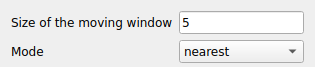
Cliquez sur l’entrée « Traitement > Réduction du bruit > Médiane mobile », et réglez la taille de la fenêtre sur 5.#
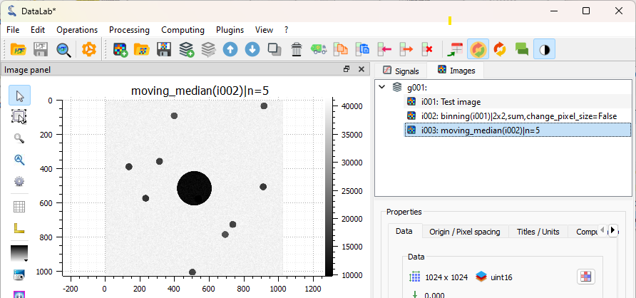
L’image filtrée est ajoutée au panneau « Images ». Le débruitage est assez efficace.#
A présent, le débruitage paraît satisfaisant : le niveau de bruit est sensiblement réduit. Nous pouvons donc passer à l’étape suivante : détecter les taches sur l’image. Pour ce faire, nous pouvons utiliser la fonction « Détection de taches » disponible dans le menu « Analyse ». Différents algorithmes sont disponibles, ici nous utiliserons celui d’OpenCV.
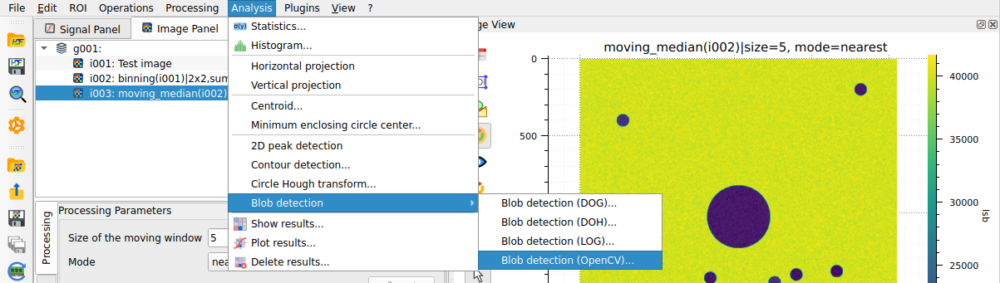
Cliquons sur « Analysis > Blob detection > Blob detection (OpenCV) ».#
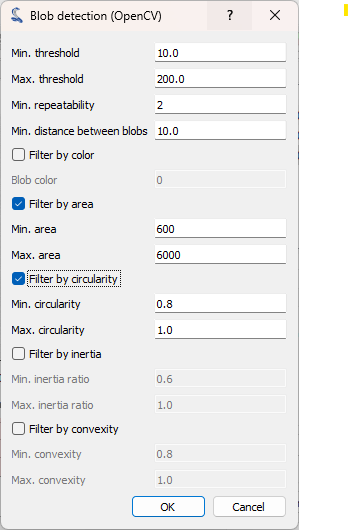
La boîte de dialogue « Blob detection (OpenCV) » s’ouvre. Réglez les paramètres comme indiqué sur la capture d’écran, et cliquez sur « OK ».#
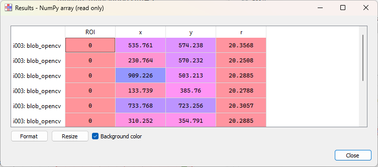
La boîte de dialogue « Résultats » s’ouvre, montrant les taches détectées : une ligne par tache, avec les coordonnées et le rayon de la tache.#
Note
Si vous souhaitez afficher à nouveau les résultats d’analyse, vous pouvez sélectionner l’entrée « Afficher les résultats »  dans le menu « Analyse », ou le bouton « Résultats » , dans le panneau de propriétés en dessous de la liste des images :
dans le menu « Analyse », ou le bouton « Résultats » , dans le panneau de propriétés en dessous de la liste des images :

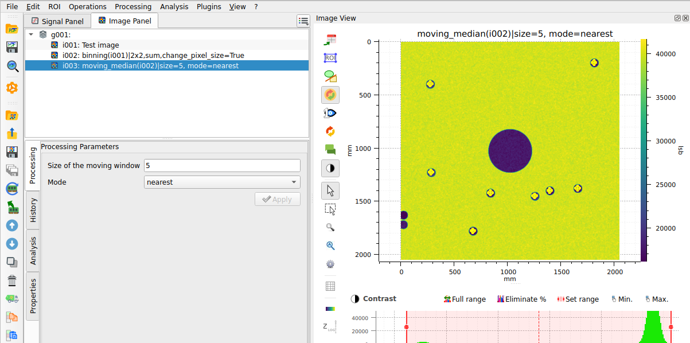
Les taches détectées sont également ajoutées aux métadonnées de l’image, et peuvent être visualisées dans le panneau de visualisation à droite.#
Enfin, nous pouvons enregistrer l’espace de travail dans un fichier. L’espace de travail contient toutes les images qui ont été chargées dans DataLab, ainsi que les résultats de traitement. Il contient également les paramètres de visualisation (palettes de couleurs, contraste, etc.), les métadonnées et les annotations. Pour enregistrer l’espace de travail, cliquez sur « Fichier > Enregistrer dans un fichier HDF5… », ou sur le bouton  dans la barre d’outils.
dans la barre d’outils.
Si vous souhaitez charger à nouveau l’espace de travail, vous pouvez utiliser « Fichier > Ouvrir un fichier HDF5… » (ou le bouton  dans la barre d’outils) pour charger l’ensemble de l’espace de travail, ou « Fichier > Parcourir un fichier HDF5… » (ou le bouton
dans la barre d’outils) pour charger l’ensemble de l’espace de travail, ou « Fichier > Parcourir un fichier HDF5… » (ou le bouton  dans la barre d’outils) pour charger uniquement une sélection d’ensembles de données de l’espace de travail.
dans la barre d’outils) pour charger uniquement une sélection d’ensembles de données de l’espace de travail.